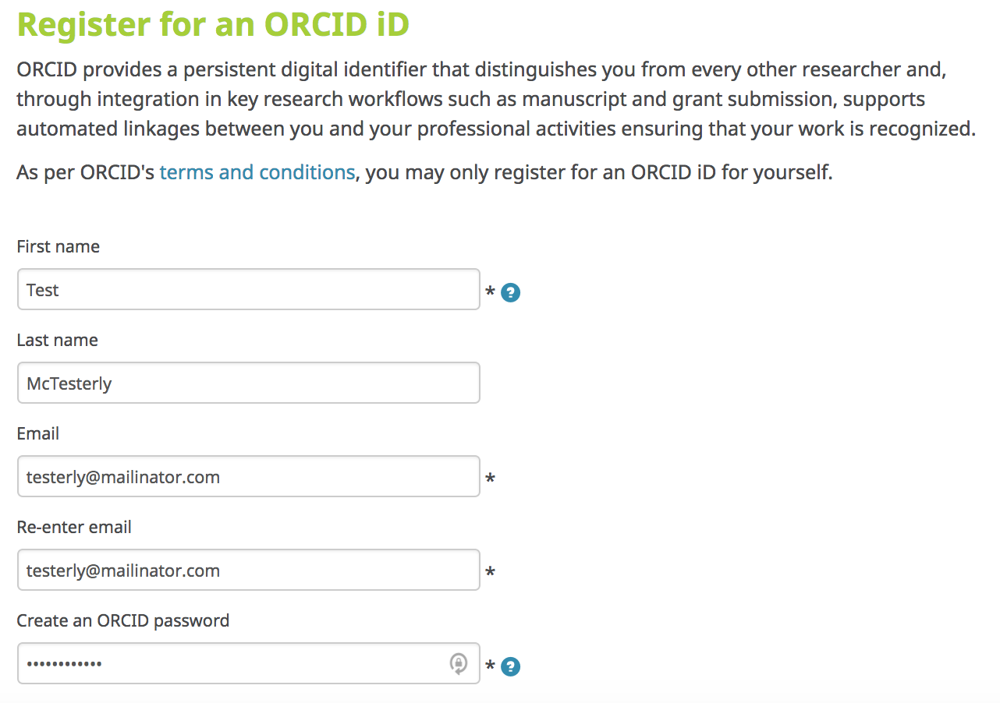

2. Set up the Sandbox
For this tutorial, we'll use ORCID's test environment, the ORCID Sandbox. The Sandbox works just like the production ORCID Registry, with a few exceptions:
- Sandbox only sends emails to mailinator.com addresses
- Import wizard tools don't work in the Sandbox
- Menu links to informational content (For Researchers, For Organizations, About, Help, etc) don't work in the Sandbox
- Sandbox doesn't contain production data
Create a Sandbox ORCID record
To get started, you'll need to register an ORCID iD in the Sandbox.
- In a new window or tab, visit https://sandbox.orcid.org/register
- Complete the form with a name, email, and password.
IMPORTANT! Don’t use a real email address! Instead, make up an address ending in @mailinator.com (ex: sgarcia@mailinator.com).
 - Click the I consent… checkbox and click Register.
Remember the email and password - you'll need these throughout the rest of the tutorial!
Verify your email address
Before you can edit information on your ORCID record, you'll need to verify your email address.
- In a new window or tab, visit https://www.mailinator.com
- Enter the @mailinator.com address you used to register your Sandbox account and click Go.

- Open the message with the subject [ORCID] Reminder to verify your email address and click the Verify your email address button.

- Log into ORCID, if prompted, to finish verifying your email. Since you've just registered, you are likely already logged in and will not be prompted to log in again.
- After verifying your email, you'll be redirected to your Sandbox record
Make note of the 16-digit iD for your Sandbox record - you'll need this throughout the rest of the tutorial!

Add info to your Sandbox record
- Add a country: Click the pencil icon beside Country, choose a country and click Save changes.

- Add employment: In the Employment section, click Add employment > Add manually, fill out the form and click Add to list.

- Take a look at your employment entry and notice the following fields, which are included with each item on an ORCID record:
- Source: Person or organization that added the item
- Created: Date the item was added
- Privacy: Visibility setting for the item